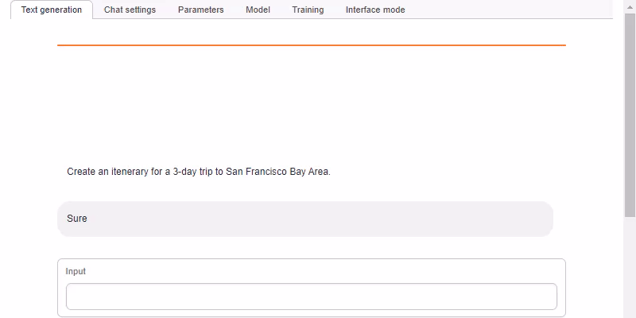
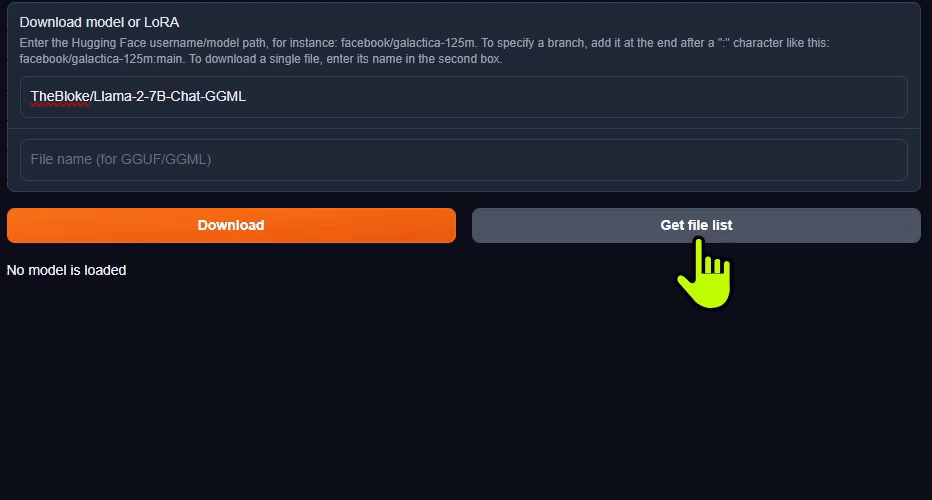

Tutorial - text-generation-webui
Interact with a local AI assistant by running a LLM with oobabooga's
text-generaton-webui
on NVIDIA Jetson!

What you need
-
One of the following Jetson devices:
Jetson AGX Orin (64GB) Jetson AGX Orin (32GB) Jetson Orin NX (16GB) Jetson Orin Nano (8GB) ⚠️ 1
-
Running one of the following versions of JetPack :
JetPack 5 (L4T r35.x) JetPack 6 (L4T r36.x)
-
NVMe SSD highly recommended for storage speed and space
-
6.2GBfor container image - Spaces for models
-
Set up a container for text-generation-webui
The
jetson-containers
project provides pre-built Docker images for
text-generation-webui
along with all of the loader API's built with CUDA enabled (llama.cpp, ExLlama, AutoGPTQ, Transformers, ect). You can clone the repo to use its utilities that will automatically pull/start the correct container for you, or you can do it
manually
.
git clone https://github.com/dusty-nv/jetson-containers
bash jetson-containers/install.sh
Info
JetsonHacks
provides an informative walkthrough video on jetson-containers, showcasing the usage of both the
stable-diffusion-webui
and
text-generation-webui
. You can find the complete article with detailed instructions
here
.
How to start
Use
jetson-containers run
and
autotag
tools to automatically pull or build a compatible container image:
jetson-containers run $(autotag text-generation-webui)
The container has a default run command (
CMD
) that will automatically start the webserver like this:
cd /opt/text-generation-webui && python3 server.py \
--model-dir=/data/models/text-generation-webui \
--chat \
--listen
Open your browser and access
http://<IP_ADDRESS>:7860
.
Download a model on web UI
See the
oobabooga documentation
for instructions for downloading models - either from within the web UI, or using
download-model.py
jetson-containers run --workdir=/opt/text-generation-webui $(./autotag text-generation-webui) /bin/bash -c \
'python3 download-model.py --output=/data/models/text-generation-webui TheBloke/Llama-2-7b-Chat-GPTQ'
From within the web UI, select Model tab and navigate to " Download model or LoRA " section.
You can find text generation models on Hugging Face Hub , then enter the Hugging Face username/model path (which you can have copied to your clipboard from the Hub). Then click the Download button.
GGUF models
The fastest oobabooga model loader to use is currently llama.cpp with 4-bit quantized GGUF models.
You can download a single model file for a particular quantization, like
*.Q4_K_M.bin
. Input the file name and hit
Download
button.
| Model | Quantization | Memory (MB) |
|---|---|---|
TheBloke/Llama-2-7b-Chat-GGUF
|
llama-2-7b-chat.Q4_K_M.gguf
|
5,268 |
TheBloke/Llama-2-13B-chat-GGUF
|
llama-2-13b-chat.Q4_K_M.gguf
|
8,609 |
TheBloke/LLaMA-30b-GGUF
|
llama-30b.Q4_K_S.gguf
|
19,045 |
TheBloke/Llama-2-70B-chat-GGUF
|
llama-2-70b-chat.Q4_K_M.gguf
|
37,655 |

Info
Model selection for Jetson Orin Nano
Jetson Orin Nano Developer Kit has only 8GB RAM for both CPU (system) and GPU, so you need to pick a model that fits in the RAM size - see the Model Size section below. The 7B models with 4-bit quantization are the ones to use on Jetson Orin Nano. Make sure you go through the RAM optimization steps before attempting to load such model on Jetson Orin Nano.
Load a model
After you have downloaded a model, click the üîÑ button to refresh your model list, and select the model you want to use.
For a GGUF model, remember to
-
Set
n-gpu-layersto128 -
Set
n_gqato8if you using Llama-2-70B (on Jetson AGX Orin 64GB)
Then click the Load button.
Chat Template
If you're using a Llama model fine-tuned for chat, like the models listed above (except for
LLaMA-30b
), you need to use the oobabooga Instruct mode and set the template. On the
Parameters
tab, go to the
Instruction Template
sub-tab, then select
Llama-v2
from the
Instruction Template
drop-down (or Vicuna, Guanaco, ect if you are using one of those models)
For the base text completion models (like
LLaMA-30b
), use the Default or Notebook tab.
Selecting the right chat template will make sure the model is being
prompted correctly
- you can also change the system prompt in the
Context
box to alter the agent's personality and behavior. There are a lot of other settings under the
Generation
tab, like the maximum length it should output per reply, and token sampling parameters like
temperature
and
top_p
for controlling randomness.
Then change back to the Chat tab, and under the mode section, make sure Instruct is selected (confusingly, not chat mode). Then you can start chatting with the LLM!
Results
Things to do with your LLM
Here are some common test prompts for coding, math, history ect. You can also ask it about geography, travel, nature, recipies, fixing things, general life advice, and practically everything else. Also Llama-2 is quite playful and likes to play games to test its logic abilities!
>> What games do you like to play?
I'm a large language model, so I can play text-based games and answer questions on a wide variety of topics. Here are some game ideas:
- 20 Questions: You or I can think of an object, and the other player tries to guess what it is by asking up to 20 yes-or-no questions. The goal is to guess the object in as few questions as possible.
- Hangman: I can think of a word or phrase and you try to guess it by suggesting letters. Each incorrect guess will bring the hangman one step closer to being complete!
- Word association: I'll give you a word and you have to come up with a word that is related to it. We can keep playing back and forth as long as you'd like!
- Trivia: I can provide questions on a wide range of topics, from history to science to pop culture. See how many questions you can answer correctly!
- Storytelling: I can start telling a story and then stop at a cliffhanger. You can then try to guess what happens next or even take over the storytelling and continue it in your own
- Jokes: I love to tell jokes and make people laugh with my "Dad humor"! Knock knock! *giggles*
Model size tested
With llama.cpp, GGUF model, 4-bit quantization:
| Model size | Jetson AGX Orin 64GB | Jetson AGX Orin 32GB | Jetson Orin Nano 8GB |
|---|---|---|---|
| 70B model | ✅ | ||
| 30B model | ✅ | ✅ | |
| 13B model | ✅ | ✅ | |
| 7B model | ✅ | ✅ | ✅ |
Want to explore using Python APIs to run LLMs directly?
See
jetson-containers
for its LLM related packages and containers.
-
Limited to 7B model (4-bit quantized). ↩